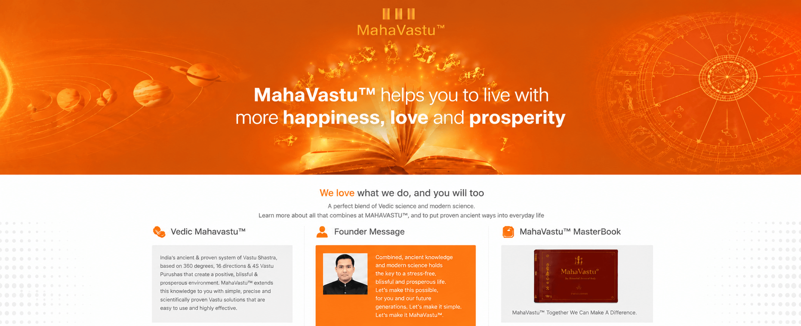
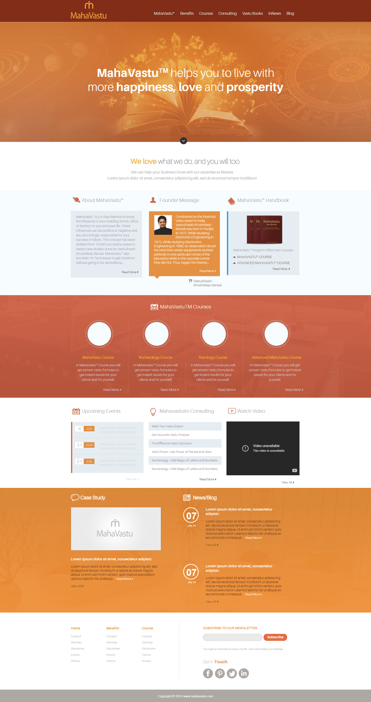
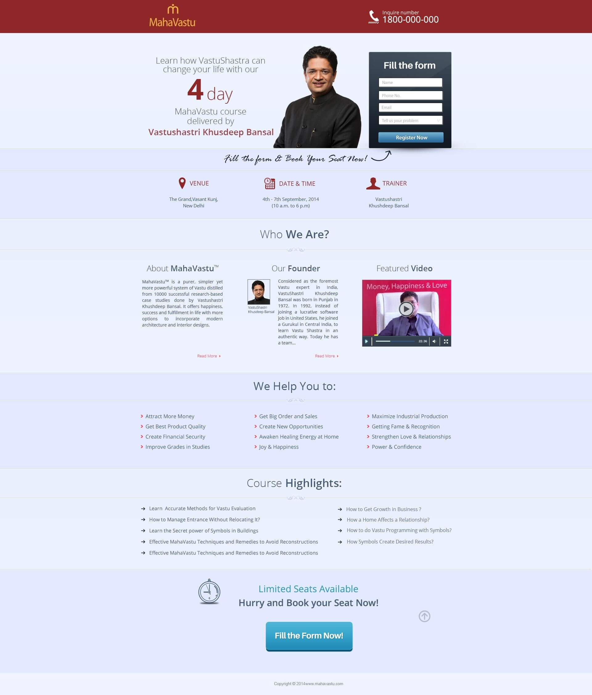

Courses, consultancy, books, events and related disciplines created a large volume of information to organise.
← Back to workAncient knowledge.
MahaVastu · Digital Acquisition Campaign
Ancient knowledge.
A modern digital journey.

Project overview
A knowledge platform.
Built to create action.
MahaVastu connects Vastu education, professional courses, consultancy and knowledge resources under the guidance of Khushdeep Bansal.
Our campaign connected an information-rich website, focused registration landing pages and ongoing Facebook and YouTube communication into one digital acquisition journey.
- Offering
- Courses + Consulting
- Experience
- Landing Page
- Channels
- Facebook + YouTube
- Objective
- Course Registration
The challenge
Explain the method.
Keep the next step simple.
Prospective learners needed enough confidence to understand the programme without losing sight of registration.
The digital journey
Discover. Understand.
Register.
Each touchpoint had a defined role: social created interest, the website established depth, and focused landing pages converted course intent.
- 01
Discover
Course and knowledge creatives introduce a relevant topic.
- 02
Explore
The broader website builds credibility through programmes and resources.
- 03
Decide
A focused landing page answers the practical questions.
- 04
Register
A clear form turns interest into a course enquiry.
The digital properties
Depth when needed.
Focus when it mattered.
The main experience created a complete knowledge destination. The campaign landing page reduced that world to one course, one trainer, essential details and one clear registration action.


Conversion principles
Enough context.
No competing action.
Specific promise
Lead with the course and the learning outcome.
Visible authority
Trainer, method and brand information establish confidence.
Practical details
Date, time, venue and highlights answer decision-stage questions.
Direct response
The registration form remains the primary page action.
The outcome
A connected platform.
From knowledge to enquiry.
The campaign gave MahaVastu a coordinated digital structure for presenting its method, promoting programmes and moving prospective learners toward registration.
Clearer discovery
Social content created multiple entry points into the course ecosystem.
Focused conversion
Dedicated landing pages removed distractions around registration.
Connected content
Web, Facebook and YouTube supported one continuous journey.
Knowledge made accessible.Action made obvious.
Have knowledge worth growing?